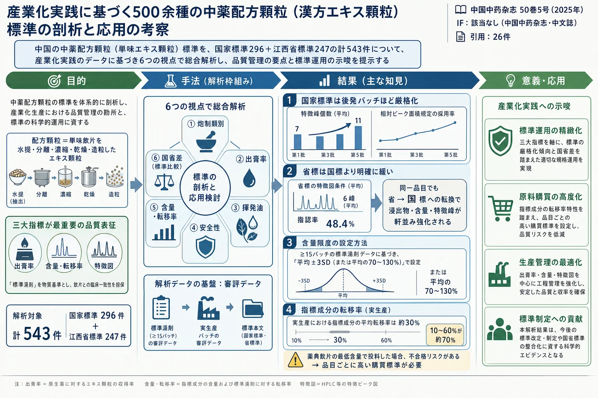

産業化実践に基づく500余種の中薬配方顆粒（漢方エキス顆粒）標準の剖析と応用の考察

<!-- 方針: ほぼ全訳＋必要に応じた補足。原文（中文・学術探討）構成に沿って訳出。本文の[N]は原文の番号引用に対応し末尾の参考文献にリンクする。原文は統計解析中心で図版（写真・グラフ）は無く 表1〜表7の7表が情報の中心（原本PDFをPyMuPDFで全10ページ確認、埋め込み画像0。5頁目の多数の描画オブジェクトは表5の罫線）。全表を原文の全数値で転記した。「> 補足:」は訳者注。 -->
書誌情報
- 原題: 基于产业化实践的500余种中药配方颗粒标准剖析及应用思考（Analysis and application thinking of standards for 500 kinds of traditional Chinese medicine formula granules on base of industrial practice）
- 著者: 刘勇（LIU Yong）¹・张军（ZHANG Jun）²・董新海（DONG Xin-hai）¹\*・周林²・孙冬梅²・毛福林²・李振雨²・黄磊¹・刘金来¹（1. 江西一方天江薬業有限公司, 江西 南昌 330000／2. 広東一方製薬有限公司 広東省中薬配方顆粒企業重点実験室, 広東 仏山 528244）
- 掲載: 中国中药杂志（China Journal of Chinese Materia Medica）, 2025, Vol. 50, No. 5, 1427–1436 相当. DOI: 10.19540/j.cnki.cjcmm.20241216.301
- 区分: ·学术探讨·（学術探討） ＝業界の実務・技術的論点を掘り下げる論考
- 助成: 国家工信部2022年産業技術基礎公共服務平台項目（2022-230-221）／江西省中医薬標準化研究項目（2023A15）／2022年仏山市南海区重点領域科技攻関専項（南科〔2023〕20号-18）
- インパクトファクター: 該当なし（中文核心誌でJCR収載外。中薬分野の代表的学術誌）
補足: 中薬配方顆粒（中薬フォーミュラ顆粒） ＝日本でいう「単味の漢方エキス顆粒」に相当する。単味の中薬飲片を、水で抽出→分離→濃縮→乾燥→造粒して作る顆粒で、中医の臨床処方に従って複数の単味顆粒を調合し、患者が湯に溶かして服用する。伝統的な「煎じ薬（湯剤）」を顆粒で置き換える現代的な剤形である。本稿の著者らは配方顆粒を実際に製造する 一方（Yifang）グループ企業の技術者であり、当局の標準（規格）を現場で運用してきた経験に基づいて、公布された標準の統計的特徴と生産上の勘所を論じている。日本の読者には、エキス製剤メーカーの品質担当者が、公定規格543品目を統計解析して「規格の作られ方の癖」と「製造での引っかかりどころ」を解説した実務論文、と考えると位置づけが分かりやすい。
用語の整理（訳者による前置き）
- 標準湯剤（标准汤剂）＝理想的な実験条件で調製した「基準の煎じ薬」。配方顆粒はこれを 物質基準 として、飲片との臨床的な一致性を測る。
- 出膏率（出膏率, dry extract rate）＝飲片を水抽出・乾燥して得られる乾燥エキスの収率（％）。三大指標の一つ。
- 含量転移率（转移率, transfer rate）＝原料飲片中の指標成分が、最終顆粒製品まで何％移行したか。
- 特徴図／指紋図（特征图谱／指纹图谱）＝HPLC等のクロマトグラムのパターン。飲片が水煎後に外観を失っても真贋・基原を判別でき、半定量指標にもなる。特徴峰（特征峰）＝規定された指標ピーク。相対峰面積（相对峰面积）＝あるピーク面積の比で品質を縛る規定。
- 国標／省標（国家標準／省級標準）＝配方顆粒には国家統一の標準と、各省が補完する省級標準の2階層がある。
- 炮制（炮制, processing）＝生薬を炒る・蒸す・酒や蜜で炙るなどの伝統加工。飲片（饮片）＝炮制済みで直接投入できる形の生薬。
- 道地薬材（道地药材）＝本場の産地で採れた高品質の生薬。GAP＝中薬材生産品質管理規範。
要旨（摘要）
2021年に国家薬品監督管理局（以下、国家薬監局）が《中薬配方顆粒質量控制与標準制定技術要求》を発布して以降、国家薬典委員会はこれまでに国家標準を 296個 公布し、各省も順次省級標準を制定して補完してきた。これは配方顆粒産業の高速な発展を促進した。企業が国標・省標を実施して3年余り、配方顆粒の特徴と技術要求、生産工程と品質管理について、たえず深い理解と生産実践の蓄積を得てきた。それに伴い、一連の難問も浮かび上がり、産業の高品質な発展を制約している——配方顆粒の特徴に基づいて薬材・飲片の品質管理戦略をどう制定するか、高い標準要求のもとで製造コストをどう管理し、合格率と製品安定性をどう高めるか、などである。
本稿は、配方顆粒の標準と工程技術の業務に従事した経験に基づき、公布済みの国家標準および江西省標準について、品目来源と炮制類別・出膏率と揮発油工程の特徴・安全性指標の管理・特徴図／指紋図の制定の特徴・含量測定の制定の特徴・国標と省級標準の制定差など、異なる層面から剖析（解剖・分析）を行った。これにより、配方顆粒産業の同業者に対し、一方では配方顆粒標準の特徴を提示して各指標への認識・理解を深め、配方顆粒の工程品質管理体系を確立する基本的な考え方を提供し、他方では産業化実践の観点から、配方顆粒の生産品質管理で重点的に注意すべき内容について提言する。
- キーワード: 中薬配方顆粒／薬品標準／出膏率／特徴図／含量測定／産業化実践
序論
中薬配方顆粒は、単味の中薬飲片を水提・分離・濃縮・乾燥・造粒して作られる顆粒であり、中医薬理論の指導下で、中医臨床処方に従って調合された後、患者に湯で溶かして服用させる。2021年1月26日、国家薬品監督管理局は《中薬配方顆粒質量控制与標準制定技術要求》[1]（以下《技術要求》）を発布した。これは中薬配方顆粒の標準の研究・制定を指導する最も重要な文書である。
《技術要求》は、中薬配方顆粒が 湯剤の基本的属性を備え、水のみを抽出溶媒として用い、標準湯剤を物質基準として配方顆粒と飲片の臨床的一致性を測り、出膏率・有効（または指標）成分の含量および含量転移率・特徴図の三大指標を、配方顆粒の最も重要な品質表征とすることを明確に要求した。これは中薬配方顆粒の品質管理の科学性・厳密性を十分に体現しており、薬品安全監督管理の「四つの最も厳しく」の要求の生き生きとした表れでもある。
その後、各省は国家の関連要求に基づき、各省の実際に即した技術要求と管理細則をそれぞれ制定し、省級標準の研究制定・標準管理・備案（届出）管理・生産管理・使用管理を規範化するとともに、配方顆粒産業の発展を後押しする一連の好ましい政策も打ち出した。たとえば江西省薬品監督管理局は《薬品審評審批をさらに最適化し医薬産業の高品質発展を促進する若干の措置について》[2] を印発し、中薬配方顆粒の研究開発と生産を奨励し、標準研究の起草単位に証書を交付し、江西の道地薬材配方顆粒の大品目を発展させた。安徽省医保局などは《安徽省の中薬配方顆粒産業発展支援の意見》[3] を連合印発し、「産業クラスターの拡大・優位企業の育成・研究開発イノベーションの奨励・標準体系の完善・医保支援の拡大・臨床使用の誘導・精準扶持の実施」の7つの側面から22条の支援措置を提起した。2023年9月には、山東省が《中薬配方顆粒採購連盟集中採購文件》を発布し、15の省で構成される省際連盟により、国家薬品標準に属する配方顆粒品目200個を組み入れ、配方顆粒の集中購買の幕を開けた。
国家薬品監督管理局の中薬配方顆粒備案情報の検索によれば、現在、我が国では元の6社の試点（パイロット）企業のほか、新たに生産企業が80社以上増え、備案情報は2万9000余条、江西省本土の5生産企業だけで500余りの品目を備案している。中薬配方顆粒の標準制定・公布の経路の特殊性と集中性のため、多くの生産企業は前期には標準研究に参与しておらず、すでに国家または省級標準が公布された後に、異なる品目について工程研究・上市備案を進めることになる。配方顆粒標準の指標・限度は、伝統的な中薬飲片や中成薬への要求より著しく高く、加えて中薬材の品質・成分の複雑性もあり、企業は標準中の指標限度の制定背景や工程設計について十分に理解していない可能性がある。そのため、比較的大きな資源を投入し、研究と生産の実践の中で異なる品目の技術的問題を一つずつ攻略・解決し、品質・工程体系を確立し、標準・コスト・製品構成・市場などの変化に適応するようたえず調整していく必要がある。
本稿は、公布・実施済みの 296個の国家標準および247個の江西省標準 について、多層次・多角度の統計分析を行い、配方顆粒の品目および鍵となる品質管理指標などの特徴を提示するとともに、筆者らの配方顆粒産業実践と結び付けて、生産の鍵となる工程と品質管理のいくつかの経験・所感を論述する。
1. 中薬配方顆粒標準の公布状況
1.1 国家標準
2021年4月、国家薬品監督管理局は第一批160個の中薬配方顆粒国家標準を批准・公布した。2024年5月時点で、すでに7批・計 296個 を公布している。
1.2 省級標準
現在、計30省が省級標準を計 9429個 公布しており、すでに国家標準に転換されて廃止された標準を除いた重複しない標準は計666個ある。大多数の省が公布した標準は200個を超え、各省の品目にはかなりの重複があるが、大きな差異も存在する。20省を超える省が公布している同一標準 は約27.5%を占め、そのうち牡丹皮・山薬・炒川楝子・醋莪朮（広西莪朮）・鵝不食草・茯苓・枸杞子・芦根・佩蘭などの標準は30省すべてが公布している。5省以下でしか公布されていない標準 は約47.9%を占め、当面1省でしか公布されていない標準も167個あり、比率は25.1%に達する（百蕊草・百薬煎・炒葛根・炒椿皮・炒牡丹皮・麸炒烏薬・麸木香・崗梅・蜜麸炒党参（党参）・南寒水石・清香藤・四季青・制関白附・沢漆など）。これは地方の飲片炮制と臨床用薬の特色を体現している。
筆者らが所在する江西省が公布した省級標準は10批・計339個で、うち92個はすでに国家標準に転換されて廃止され、残る247個は全国累計公布省級標準総数の35%を占める。呉茱萸（石虎）を除き、いずれも広東一方製薬有限公司・江陰天江薬業有限公司・華潤三九医薬股份有限公司・四川新緑色薬業科技発展有限公司・北京康仁堂薬業有限公司の5社が研製・申報したものである。
2. 工程と品質管理の観点からみた中薬配方顆粒標準の特徴の剖析
2.1 品目分析
296個の国家標準と247個の江西省標準を 入薬部位 で分類すると、根および根茎類（32.6%）・果実種子類（30.0%）・全草類（12.5%）・花類（5.9%）など計12類別を含み、うち上位3類別で標準総数の75.1%を占める。江西省が公布した動物薬配方顆粒標準は計20個（鼈甲／醋鼈甲・蝉蛻・醋亀甲・地竜（参環毛蚓）・阿膠・亀甲膠・鶏内金／炒鶏内金・九香虫／炒九香虫・全蠍など）、鉱物薬標準は4個（煅磁石・煅自然銅・滑石・赭石）である。
炮制類別 で分類すると、単純な浄制・切制工程のみを経た飲片を除き、計139個の炮制品標準がある（表1）。
表1 炮制類別で分類した中薬配方顆粒標準（Table 1）
| 炮制類別 | 標準数 | 品目の例 |
|---|---|---|
| 炒制 | 58 | 清炒（炒白芍・炒酸棗仁・炒火麻仁・炒牛蒡子・炒山楂（山里紅）・炒王不留行など）／炒焦（焦檳榔・焦麦芽・焦梔子・焦山楂（山里紅））／炒炭（側柏炭・荊芥炭・茅根炭・小薊炭など）／麸炒（麸炒白朮・麸炒枳殻・麸炒山薬・麸炒薏苡仁など）／砂炒（烫狗脊・烫骨砕補・烫水蛭（螞蟥）・醋亀甲・醋鼈甲など） |
| 酒炙 | 15 | 酒当帰・酒黄芩・酒白芍・酒牛膝・酒大黄（薬用大黄）・酒川芎 |
| 蜜炙 | 14 | 蜜款冬花・蜜枇杷葉・炙甘草（甘草）・蜜桑白皮・炙黄芪（蒙古黄芪）・蜜百部（対葉百部）など |
| 塩炙 | 14 | 塩杜仲・塩橘核・塩知母・塩沢瀉（東方沢瀉）・塩補骨脂・塩胡芦巴など |
| 醋炙 | 10 | 醋北柴胡・醋香附・醋三棱・醋延胡索・醋五霊脂など |
| 蒸法 | 10 | 醋五味子・酒女貞子・酒萸肉・熟地黄・塩巴戟天・制何首烏・酒黄精（多花黄精など） |
| 煮法 | 6 | 淡附片・黒順片・制巴戟天・制川烏・制呉茱萸（呉茱萸）・制遠志（遠志） |
| 燀法 | 3 | 燀苦杏仁（シベリア杏）・燀桃仁（桃）・燀桃仁（山桃） |
| 復制法 | 3 | 法半夏・姜半夏・制天南星（天南星） |
| 煅法 | 2 | 煅磁石・煅自然銅 |
| 姜炙 | 2 | 姜厚朴（厚朴）・姜竹茹（青稈竹） |
| 煨法 | 1 | 麸煨肉豆蔻 |
| 油炙 | 1 | 炙淫羊藿（淫羊藿） |
生産企業、特に標準制定に参与していない企業にとって、数百種の中薬配方顆粒の生産工程を研究・制定することは長期にわたる複雑なエンジニアリングである。原材料から成品まで、炮制・抽出・濾過・濃縮・乾燥・造粒など数工程を経る。処方工程設計・生産設備選択などでは、品目の多様性・飲片の質地性状の差異・主要成分の性質・生産量およびコスト管理などの要因を総合的に考慮する必要があり、炮制工程を除いて、同一の処方工程・設備ですべての配方顆粒製剤の生産を完了することはできない。異なる飲片の性状・質地、炮制類別、含有成分などの要因を前期に分析・分類し、差異化した処方工程を設計することで、一部の工程品質問題を予見・回避できる。特に考慮すべき要因は次のとおりである。
- デンプン・粘液質に富み微細に砕けやすい品目（薏苡仁・茯苓など）：滓液分離の効率が低く、濾過効率と製品の溶解性に注意する。
- 多糖に富む品目（山楂・山萸肉など）：噴霧乾燥で機械への粘着による損耗が生じやすく、製品安定性も低い。
- 粉質で軽く泡立つ品目（鶏内金・僵蚕）：噴霧乾燥で収率が下がる可能性がある。
- アフェルラ酸・クロロゲン酸など熱不安定成分[4] を含む品目（当帰・白朮・金銀花など）：薬液の流転時間と温度管理に注意する。
- 薏苡仁・酸棗仁など果実種子類：油脂に富み、粉体の流動性・可圧性が劣る。
- サポニン類に富む品目[5]（三七・党参・牛膝など）：抽出・濃縮過程で大量の泡が生じる。
- 同一薬材の異なる基原・炮制規格では、工程処方の汎用性を考慮する。
2.2 【製法】の分析
2.2.1 出膏率と輔料（添加剤）占比
《技術要求》は、中薬配方顆粒の成型工程が「輔料使用量の最少化を考慮し、別途規定がある場合を除き、輔料と中間体の比は一般に1:1を超えない」ことを規定している。筆者らが投料量・製成量と出膏率で折算したところ、蝉蛻・煅磁石・海金沙・茯苓・滑石・赭石・灯心草・降香の 8品目 は、出膏率の上限で計算すると輔料占比が50%を超えることが分かった。主にこれらの飲片の抽出出膏率が低すぎるためである。
煅磁石を例にとると、配方顆粒への調製は難度が大きく[5]、出膏率はわずか0.1%〜1.0%で、12 500 g の飲片から1000 g の配方顆粒を作ると、1 g の配方顆粒は飲片12.5 g に相当する。煅磁石の臨床用量は9〜30 g で、標準製法に従えば服用する配方顆粒の用量は1.0〜2.4 g となる。しかし輔料が1:1を超えない原則を満たそうとすると、最少でも50 000 g の飲片から1000 g の配方顆粒を作る必要があり、1日服用量はわずか0.18〜0.60 g となって、包装と臨床調合の用量の正確性を管理しがたい。
また、輔料上限占比が50%以下（50%を含む）に適合するが、下限占比が ≤20%・≤10%・0〜1% の品目は、それぞれ 396個（73.0%）・316個（58.2%）・193個（35.5%） ある。出膏率で折算した一部の輔料占比が低い品目を表2に示す。
中薬浸膏粉の物理的属性、製剤成型の難度、製品安定性を考えると、表2の輔料占比が低い品目の一部は、浸膏乾燥・製剤成型・製品安定性の面で問題が生じる可能性がある。原料品質・飲片炮制・抽出工程を最適化し、有効成分の転移率を保証する前提で、出膏率を比較的適切な範囲に管理し、処方設計のために一定の輔料の余地を残す必要がある。たとえば油性に富む種子類の酸棗仁[6]・薏苡仁・紫蘇子などは、粉体の流動性・可圧性が劣り、適切な輔料の余地が成型性を改善し、乾式造粒の一次成型率を高める。糖類に富む熟地黄・五味子・山萸肉／酒萸肉・山楂・大棗[7] などは、粘性・吸湿性が強く、比較的大きな輔料占比が乾燥効率・収率を高め、製剤成型の難度を下げ、製品安定性を高める。
表2 輔料占比が比較的低い一部の中薬配方顆粒品目（Table 2、単位：制法は g、その他は %）
| 製品名 | 製法/g | 出膏率下限 | 出膏率上限 | 輔料占比下限 | 輔料占比上限 |
|---|---|---|---|---|---|
| 防風 | 2000 | 27.0 | 43.0 | 14.0 | 46.0 |
| 黄芪（蒙古黄芪） | 2500 | 22.0 | 40.0 | 0.0 | 45.0 |
| 前胡 | 3500 | 20.0 | 28.0 | 2.0 | 30.0 |
| 熟地黄 | 1300 | 44.0 | 76.5 | 0.6 | 42.8 |
| 威霊仙（東北鉄線蓮） | 5000 | 12.0 | 20.0 | 0.0 | 40.0 |
| 炒山楂（山里紅） | 2000 | 28.0 | 39.0 | 22.0 | 44.0 |
| 炒酸棗仁 | 4000 | 14.0 | 23.0 | 8.0 | 44.0 |
| 醋南五味子 | 2400 | 26.0 | 38.0 | 8.8 | 37.6 |
| 大棗 | 1200 | 42.0 | 65.0 | 22.0 | 49.6 |
| 枸杞子 | 1200 | 42.0 | 70.0 | 16.0 | 49.6 |
| 焦山楂（山里紅） | 2000 | 25.0 | 40.0 | 20.0 | 50.0 |
| 金桜子 | 3000 | 17.0 | 32.0 | 4.0 | 49.0 |
| 酒萸肉 | 1200 | 42.0 | 60.0 | 28.0 | 49.6 |
| 薏苡仁 | 5000 | 10.0 | 19.0 | 5.0 | 50.0 |
| 紫蘇子 | 12000 | 5.0 | 8.0 | 4.0 | 40.0 |
| 乳香（エチオピア乳香） | 1300 | 30.0 | 65.0 | 15.5 | 61.0 |
2.2.2 揮発油の抽出と利用
543個の配方顆粒標準のうち 30個 が揮発油の抽出とβ-シクロデキストリン包接を明確に規定し、そのうち21個が揮発油含量限度を規定している。揮発油を抽出する30品目の配方顆粒標準中の揮発油含量と、2020年版《中国薬典》の飲片揮発油含量を対比し、飲片の最低揮発油含量に照らして顆粒成品の揮発油含量限度から揮発油転移率を推算したところ、各品目の転移率下限は石菖蒲の30.4%が最も高く、その他はいずれも30%未満で、最低は八角茴香の1.0%、各品目の転移率下限の平均値は10.6%であった。
推算転移率が低い品目は、揮発油の抽出・分離・包接の工程管理が適切であれば、比較的容易に含量限度に達するはずである。揮発油転移率の要求が高い品目には薄荷・乳香（エチオピア乳香）／醋乳香（エチオピア乳香）・荊芥穂・片姜黄・肉桂・石菖蒲・紫蘇葉があり、これらの品目は生産投料に用いる飲片の含揮発油量が《中国薬典》規定限度を満たすだけでは足りないことを示唆する。
各品目のうち、蒼朮（北蒼朮）・連翹（青翹）の2つの国標品目は揮発油含量の測定を要求していないが、【製法】項下で揮発油の添加量を規定している。揮発油含量測定を要求していない省標品目には草豆蔻・桂枝・花椒（花椒）・牡丹皮・肉豆蔻・益智仁・塩益智仁の7品目があり、【製法】項下でも揮発油添加量を明確にしていないため、企業が実際に即して相応の工程と品質管理指標を制定する必要がある。うち桂枝と牡丹皮は揮発性成分の桂皮アルデヒドと丹皮酚を含量指標としており、丹皮酚は冷えると結晶が析出しやすい[8] ため、工程管理に注意すべきである。揮発油を抽出する品目に対応する含油量限度および揮発油転移率の推算を表3に示す。
表3 中薬配方顆粒品目に対応する含油量限度および揮発油転移率（Table 3、単位：%。「-」は該当規定・データなし）
| 製品名 | 配方顆粒 含油量限度 | 《中国薬典》飲片 最低含油量 | 飲片量換算の 揮発油転移率 |
|---|---|---|---|
| 八角茴香 | 0.20〜1.00 | 4.00 | 1.00〜5.00 |
| 薄荷 | 0.25〜0.50 | 0.40 | 16.89〜33.78 |
| 蒼朮（北蒼朮） | 0.11 | - | - |
| 草豆蔻 | - | 1.00 | - |
| 丁香 | 1.00〜8.00 | - | - |
| 高良姜 | 0.06〜0.40 | - | - |
| 広藿香 | 0.22〜0.64 | - | - |
| 桂枝 | - | - | - |
| 花椒（花椒） | - | 1.50 | - |
| 姜黄 | 0.50〜1.50 | 5.00 | 1.82〜5.45 |
| 降香 | 0.30〜3.50 | 1.00 | 2.73〜31.82 |
| 荊芥 | 0.25〜0.60 | 0.30 | 14.62〜35.09 |
| 荊芥穂 | 0.35〜1.50 | 0.40 | 20.35〜87.21 |
| 連翹（青翹） | 0.07 | 2.00 | 1.10 |
| 牡丹皮 | - | - | - |
| 片姜黄 | 0.20〜3.50 | 1.00 | 2.86〜50.00 |
| 羌活（羌活） | 0.10〜0.40 | 1.40 | 2.04〜8.16 |
| 肉豆蔻 | - | 6.00 | - |
| 麸煨肉豆蔻 | 0.60〜3.00 | 4.00 | 3.00〜15.00 |
| 肉桂 | 1.50〜5.20 | 1.20 | 22.73〜78.79 |
| 乳香（エチオピア乳香） | 0.70〜3.70 | 2.00 | 26.92〜142.31 |
| 醋乳香（エチオピア乳香） | 0.40〜3.40 | 2.00 | 15.38〜130.77 |
| 砂仁（陽春砂） | 0.20〜1.50 | 3.00 | 1.33〜10.00 |
| 石菖蒲 | 1.00〜2.50 | 0.70 | 30.40〜75.99 |
| 小茴香 | 0.10〜0.90 | 1.50 | 1.48〜13.33 |
| 塩小茴香 | 0.10〜0.70 | 1.50 | 1.67〜11.67 |
| 辛夷（望春花） | 0.25〜0.75 | 1.00 | 4.17〜12.50 |
| 益智仁／塩益智仁 | - | 1.00 | - |
| 紫蘇葉 | 0.18〜0.35 | 0.20 | 22.50〜43.75 |
中薬揮発油は、解表・化湿・行気・開竅などの伝統的効能、および抗菌・抗ウイルス・抗炎症・心血管活性調節などの現代薬理作用[9] をもち、中薬が効能を発揮する重要な物質基礎である。中医臨床では通常、揮発油に富む飲片を「後下」（後から入れる）とし、煎煮時間を短縮して揮発油の損失を抑える。配方顆粒標準では、揮発油を単独で収集し、β-シクロデキストリン包接を採用することを明確にし[10]、最大限に薬効を保存している。標準は「標準湯剤」中の揮発油転移率に基づいて揮発油含量に上下限を設定しているが、実生産では薬材品質・収油装置および工程管理水準・包接工程などの差異により、抽出・収集されて最終的に成品へ移行する揮発油量にはバッチ間で大きな差が生じうる。揮発油に関わる抽出・包接・乾燥工程を考察し、揮発油抽出率・包接率・転移率のデータを蓄積し、中間製品（包接物）の揮発油含量の内部管理標準を設定し、揮発油および包接物の投入量を測算して、中間製品と成品の揮発油含量が標準規定限度を下回ったり上回ったりするのを避ける必要がある。特に石菖蒲など、含量測定指標が揮発性成分である品目に注意すべきである。
2.3 【特徴図】の分析
《技術要求》は、特徴図／指紋図を用いて中薬配方顆粒を多指標成分で品質管理することを規定している。この技術の導入は、中薬飲片が水煎後に外観性状の特徴を失った後の真贋鑑別という鍵となる問題をよく解決した。定性のほか半定量指標ともなり、含量測定を除いて基原・生品と炮制品・偽品と紛らわしい品[11] を区別する最も有効な品質管理指標の一つで、中薬の全体的品質管理の理念を体現している。
筆者らが543個の配方顆粒標準の【特徴図／指紋図】項を分析したところ、指紋図 を管理するのは計18標準（3.3%）で、うち14が国標、4が省標であった（白果仁・補骨脂／塩補骨脂・側柏葉・大黄（薬用大黄）・酒大黄（薬用大黄）・丹参・高良姜・炒槐花（槐花）・苦参など）。特徴図を制定していない 品目は8つあり、いずれも省標中の動物・鉱物薬であった（醋亀甲・煅磁石・煅自然銅・阿膠・亀甲膠・海螵蛸（金烏賊）・滑石・赭石）。
特徴峰の個数規定と既知成分の指認（同定）個数の面では、同じ国家標準に属していても、公布バッチが後になるほど特徴峰個数と成分指認率が増加する傾向がある。国標第一批が要求する特徴峰個数は平均7個、平均指認率56.2%だったが、第五批では11個・平均指認率68.0%に達した。省標が要求する特徴峰個数は平均6個・平均指認率48.4%で、国家標準より著しく低い。
【特徴図】項のもう一つの特徴は、一部の品目で1つまたは複数の指標に 相対峰面積 を規定していることである。特徴峰個数と比べ、国家標準は公布バッチが後になるほど相対峰面積規定を導入する標準の比率が高く、傾向は非常に明確である。一方、省標では肉蓯蓉（肉蓯蓉）1品目のみがこれを管理している。異なるバッチの国標および省標の特徴峰個数・相対峰面積要求の対比を表4に示す。
表4 国標・省標の特徴峰個数および相対峰面積要求の対比（Table 4）
| 標準類別 | 標準数量 | 平均特徴峰（指認個数） | 特徴峰2〜5個の標準数／占比 | 特徴峰6〜10個の標準数／占比 | 特徴峰10個超の標準数／占比 | 相対峰面積を管理する標準数／占比 |
|---|---|---|---|---|---|---|
| 国標第一批 | 160 | 7（4） | 58／36.3% | 86／53.8% | 16／10.0% | 53／33.1% |
| 国標第二批 | 36 | 8（4） | 6／16.7% | 25／69.4% | 5／13.9% | 8／22.2% |
| 国標第三批 | 4 | 9（4） | 0／0 | 3／75.0% | 1／25.0% | 0／0 |
| 国標第四批 | 48 | 9（5） | 3／6.3% | 33／68.8% | 12／25.0% | 26／54.2% |
| 国標第五批 | 17 | 11（7） | 0／0 | 10／58.8% | 7／41.2% | 11／64.7% |
| 国標第六批 | 31 | 10（6） | 1／3.2% | 19／61.3% | 11／35.5% | 21／67.7% |
| 省標 | 247 | 6（3） | 123／49.8% | 108／43.7% | 8／3.2% | 1／0.4% |
他の品目と比べ、企業が生産する標準に相対峰面積規定のある品目には特に注意が必要である。標準中に相対峰面積を設定するのは、薬材の基原と真贋の鑑別・原料品質の管理・炮制工程の規範化など多くの要因を考慮したものだが、標準はその制定根拠を明確にしておらず、一部の標準はその成分が何であるかすら明確にしていない。そのため含量測定と比べ、製品で示される検査結果はいっそう予測・管理しにくく、製品不合格を招く大きなリスク要因である。企業には、この種の品目の原料品質の把握を強化して源頭からリスクを回避し、同時に飲片炮制工程の研究と生産過程のモニタリングを強化することを提言する。典型的な品目には塩杜仲・塩知母・北柴胡／醋北柴胡などがある。たとえば北柴胡の【特徴図】は「ピーク8の面積と、ピーク8面積およびピーク6面積の和との比が0.85を超えないこと」を規定し、醋北柴胡は「ピーク8面積と、ピーク8面積およびピーク6面積の和との比が0.85より大きいこと」を規定している。北柴胡の標準は工程過程でのサイコサポニンaの分解を管理し[12]、醋北柴胡の標準はさらに炮制の程度がサイコサポニンaに及ぼす影響の程度を制約している。炮制の程度が不足すると特徴図が不合格になりうるし、炮制が過ぎると含量が不合格になりうる。
2.4 外源性および内源性有害残留物の管理
配方顆粒標準は、外源性・内源性の有害物質の管理から用薬の安全性を高めることを重視し、そのために一部の品目に安全性検査指標を設定している。543標準のうち、相応の安全性検査項目を制定したのは83個（15.3%）である。有害残留物の検査項目と対応品目を表5に示す。
《中国薬典》2000年版から、中薬標準の本文および附録に、有機塩素系農薬残留・重金属および有害元素・アフラトキシン・二酸化硫黄などの検査法と限度要求が順次収載された。重金属・有害元素・真菌毒素は濃縮（富集）が起こりやすく、たとえば烫水蛭（螞蟥）配方顆粒中のヒ素の含量はほぼ全量が移行する[13]。そのため外源性有害物質のリスクが高い品目[14] については企業が慎重に購買・投料し、アフラトキシンが生じやすい薬材・飲片[15] については受入検査・工程過程・貯蔵期間の品質管理を強化し、薬材・飲片の検査・養護を増やし、生産周期を短縮すべきである。
表5 有害残留物の検査項目と対応する中薬配方顆粒品目（Table 5）
| 検査項目 | 対応品目 |
|---|---|
| 重金属および有害元素 | 阿膠・白芍・白薇（白薇）・白芷（白芷）・白芷（杭白芷）・側柏炭・燀桃仁（山桃）・大腹皮（大腹皮）・大棗・麸炒薏苡仁・丹参・当帰・甘草（甘草）・葛根・貫葉金糸桃・海螵蛸（金烏賊）・黄芪（蒙古黄芪）・積雪草・姜黄・金銀花・筋骨草・酒白芍・酒女貞子・酒続断・絡石藤・牽牛子（裂葉牽牛）・炒僵蚕・炒九香虫・炒苦杏仁（シベリア杏）・炒莱菔子・陳皮・醋延胡索・炒牽牛子（裂葉牽牛）・炒山楂（山里紅）・紅麹・火麻仁・焦檳榔・九香虫・苦杏仁（シベリア杏）・莱菔子・胖大海・肉豆蔻・烫水蛭（螞蟥）・土鼈虫（地鼈）・蜈蚣・延胡索・薏苡仁・遠志（遠志）・制遠志（遠志） |
| 硫熏（硫黄燻蒸）検査 | 白芍・炒白芍・酒白芍・青蒿・人参・三七 |
| その他 有機塩素系農薬残留量 | 甘草（甘草）・黄芪（蒙古黄芪）・人参・山萸肉・山楂（山里紅）・烫水蛭（螞蟥） |
| 5-ヒドロキシメチルフルフラール（5-羥甲基糠醛） | 炒山楂（山里紅）・酒白芍・桃仁（桃）・西洋参 |
| アドニフォリン（阿多尼弗林碱） | 千里光 |
| シトリニン（桔青霉素） | 紅麹 |
| アリストロキア酸Ⅰ（馬兜鈴酸Ⅰ） | 蜜馬兜鈴（北馬兜鈴） |
| 双エステル型アルカロイド（双酯型生物碱） | 淡附片・黒順片・制川烏 |
| アフラトキシン（黄曲霉毒素） | 荜茇・檳榔・燀苦杏仁（シベリア杏）・燀桃仁（山桃）・炒檳榔・炒火麻仁 |
| カルボキシアトラクチロシド（羧基蒼朮苷） | 炒蒼耳子 |
| ゼアラレノン（玉米赤霉烯酮） | 麸炒薏苡仁・薏苡仁 |
補足: 表5は原文で2段組みレイアウトのため、一部の品目と検査項目の厳密な対応は原文の版面配置に依存する。上表は各検査項目の見出しと、その直後に列挙される品目に基づいて再構成したもので、検査項目の区分そのものは原文どおりだが、少数の品目（紅麹・烫水蛭・栀子・栀子炭・紫蘇梗など、複数の検査項目にまたがりうる品目）の正確な帰属は 原文の表5を参照 されたい（原文の品目・数値を離れた推測での割り当ては行っていない）。
2.5 【含量測定】の分析
《中国薬典》で原料含量を管理する指標と、配方顆粒標準で成品含量を管理する指標を合計すると、543品目で計 833個の指標 の測定に関わる（単一成分・総成分・数種成分総量の測定はいずれも1指標として計上）。原料薬材・飲片に対して管理する指標数は計504個、配方顆粒成品に対して管理する指標数は744個である。そのうち、66品目・計88指標は原料で管理を要求するが配方顆粒標準では《中国薬典》を踏襲しておらず、159品目・計329指標は原料では管理していないが配方顆粒で追加している。したがって全体として、配方顆粒の含量測定への要求は薬材・飲片への要求より著しく高い。
指標個数のみ（重複指標を除く）で数えると、原料の含量測定指標は251個、配方顆粒の含量測定指標は359個である。原料の含量測定指標のうち39個は対応する配方顆粒で踏襲されておらず、147個の新規追加指標は原料では相応の管理がされていない。すなわち計 186個 の指標が原料標準と配方顆粒標準で対応していない。計257個の配方顆粒含量測定指標は《中国薬典》原料含量測定指標と完全に一致し、その他の品目はいずれも差異がある（指標の新規追加や削除）。
配方顆粒の測定指標数の分布を分析すると、茅根炭・炒柏子仁・法半夏・姜半夏・焦麦芽・南沙参（輪葉沙参）の6品目は含量測定指標を設定しておらず、測定指標数が1個のみの標準は370個（68.1%）、2個の標準は138個（25.4%）である。測定指標が比較的複雑な品目には羌活があり、揮発油含量の測定のほか、3種の異なるクロマトグラフ条件でアフェルラ酸・イソジャトロリジン（異紫花前胡苷）とジャトロリジン（紫花前胡苷）・ノトプテロール（羌活醇）とイソイムペラトリン（異欧前胡素）をそれぞれ測定しており、品質・工程管理に一定の課題をもたらす。
配方顆粒のすべての指標の含量限度は「1 g あたりXXXをXXX〜XXX mg含む」の形で上下限として規定される。その許容範囲は、主に 15バッチ以上の標準湯剤 の有効（または指標）成分の含量および含量転移率に基づき、平均±3倍SD（または平均の70%〜130%）の原則 に従い、工程バリデーションと多バッチの大規模生産の実データを総合して確定され、原料品質・飲片品質・製剤工程の変動を反映している。
435個の国標含量測定指標と310個の省標含量測定指標（異なる品目に配慮して重複指標は除かない）について、含量上限／含量下限で含量許容変動幅を求めてその分布を分析すると、国家標準の含量許容変動幅が1〜3倍の指標数は229個（52.6%）、3〜5倍は171個（39.3%）、5〜10倍は32個（7.4%）、10倍超はわずか3個であった。省標の対応区間の指標数と占比はそれぞれ63個（20.3%）・110個（35.5%）・102個（32.9%）・35個（11.3%）であった。これは、国家標準が指標成分含量の許容変動幅の管理において省級標準より著しく厳しく、配方顆粒の品質一致性と工程安定性の保障により有利であることを示す。
293品目・計363個の指標成分について、《中国薬典》飲片含量の最低限度で投料すれば配方顆粒の最低含量限度を満たせると仮定して、飲片から配方顆粒成品までの指標成分転移率を折算したところ、転移率が30%を超える指標成分は約70%、60%を超えるものは約35%、90%を超えるものは約20%、さらに約8%の指標成分は転移率が120%を超え、最高は300%を超えた。指標成分の転移率分布を表6に示す。
表6 《中国薬典》飲片含量限度から推算した指標成分転移率の区間分布（Table 6）
| 転移率 a／% | 指標成分数 | 占比／% |
|---|---|---|
| 0 < a ≤ 10 | 35 | 9.6 |
| 10 < a ≤ 30 | 75 | 20.7 |
| 30 < a ≤ 60 | 129 | 35.5 |
| 60 < a ≤ 90 | 53 | 14.6 |
| 90 < a ≤ 120 | 41 | 11.3 |
| 120 < a ≤ 312 | 30 | 8.3 |
含量測定は、配方顆粒が原料品質・工程過程・製品安定性などを管理するうえで最も注目される項目の一つであり、製品合格率を測る最も精確な指標の一つでもある。企業は、配方顆粒標準に従って相応の原料薬材・飲片の含量測定指標を制定するほか、各種の指標成分の理化学的性質を重点的に理解し、生産中の転移率を研究して、飲片炮制および抽出工程の設計を導き、炮制飲片の砕度・抽出水量・煎煮時間などの鍵パラメータを研究・最適化し、異なる品目の原料から最終製品までの含量関係を確立して、薬材品質の変動による成品含量不合格のリスクを下げるべきである。
上記の方法で《中国薬典》飲片の最低含量限度から主成分転移率を判断して生産投料を導くことには、比較的大きな不確実性とリスクが存在する。実際の生産データを分析すると、全体として各指標成分の平均転移率は約30%で、転移率が10%〜60%の指標成分が約70%を占め、現時点では転移率が100%を超える状況は見つかっていない。推算転移率が実際の転移率より著しく高い品目については、《中国薬典》最低含量での投料では配方顆粒の含量合格を保証できない可能性があることを示しており、品目・工程の特徴に応じてより高い購買標準を制定する必要がある。
2.6 省級標準から国家標準への転化の分析
異なる公布バッチの国家標準間の対比、および国家標準と省級標準の対比からみると、国家標準は異なる公布バッチ間で、後のバッチほど指標管理が厳しく、国家標準は省級標準より著しく厳しい。これは特徴図の特徴峰個数・相対峰面積の管理に表れるだけでなく、製法・出膏率・浸出物・含量測定指標にも表れている。筆者らは、省標が国標に転換された後に指標変化が大きい一部の品目を選んで対比した（表7）。
表7 一部の省標→国標転換品目の主要指標の変化（Table 7）
| 品名 | 製法/g（省標→国標） | 特徴峰/個（省標→国標） | 浸出物/%（省標→国標） | 含量測定 |
|---|---|---|---|---|
| 艾葉 | 4000 → 無変化 | 6 → 13 | ≥20.0 → ≥26.0 | 【省標】1 gあたりクロロゲン酸3.0〜15.0 mg；総フラボノイド（アピゲニン換算）52.0〜176.5 mg／【国標】クロロゲン酸3.0〜10.0 mg；総フラボノイド（アピゲニン換算）50.0〜150.0 mg；棕矢車菊素0.30〜1.10 mg・異沢蘭黄素0.60〜2.20 mg |
| 白前（柳葉白前） | 4000 → 3800 | 8 → 8 | ≥18.0 → ≥25.0 | 【省標】バニリン酸0.03〜0.25 mg／【国標】トリプトファン0.15〜0.50 mg；バニリン酸0.10〜0.40 mg |
| 炒蔓荊子（単葉蔓荊） | 6300 → 6200 | 6 → 6 | ≥13.0 → ≥16.0 | 【省標】蔓荊子黄素0.8〜2.8 mg／【国標】蔓荊子黄素1.0〜2.9 mg・穂花牡荊苷3.4〜12.0 mg |
| 覆盆子 | 5000 → 5500 | 5 → 8 | ≥10.0 → ≥16.0 | 【省標】エラグ酸6.0〜22.0 mg／【国標】エラグ酸7.0〜17.0 mg；ケンフェロール-3-O-ルチノシド0.5〜1.6 mg |
| 浮萍 | 5500 → 6000 | 7 → 11 | ≥21.0 → ≥23.0 | 【省標】ビテキシン2.5〜8.0 mg／【国標】総フラボノイド（ルチン換算）45.0〜120.0 mg；オリエンチン14.0〜33.0 mg・ビテキシン3.2〜10.0 mg・ルテオロシド8.0〜22.0 mg |
| 蔓荊子（単葉蔓荊） | 5600 → 5500 | 6 → 6 | ≥12.0 → ≥16.0 | 【省標】蔓荊子黄素0.8〜2.5 mg／【国標】蔓荊子黄素0.9〜2.9 mg・穂花牡荊苷3.5〜15.0 mg |
| 木芙蓉葉 | 5000 → 無変化 | 7 → 13 | ≥8.0 → ≥12.0 | 【省標】ティリロシド（椴樹苷）0.5〜3.0 mg；無水ルチン0.6〜4.8 mg／【国標】ティリロシド0.7〜3.0 mg；ルチン1.0〜4.0 mg |
| 羌活（羌活） | 3500 → 無変化 | 7 → 12 | ≥15.0 → ≥26.0 | 【省標】アフェルラ酸1.5〜8.0 mg；ノトプテロール＋イソイムペラトリン計0.5〜4.0 mg／【国標】揮発油0.10%〜0.40%（mL·g⁻¹）；アフェルラ酸1.7〜6.0 mg；イソジャトロリジン＋ジャトロリジン計1.5〜6.0 mg；ノトプテロール＋イソイムペラトリン計0.8〜3.2 mg |
| 青風藤（青藤） | 5000 → 5600 | 5 → 11 | ≥20.0 → ≥33.0 | 【省標】シノメニン30.0〜75.0 mg／【国標】シノメニン40.0〜94.0 mg；マグノフロリン24.0〜49.0 mg |
（含量測定はいずれも「1 gあたり」。省標→国標で指標成分の追加・限度の引き上げが軒並み起きていることが読み取れる。）
国家標準制定の厳密性は省級標準より高い。省級標準は各省で重複と差異が存在し、企業の跨省（省をまたぐ）備案・販売に不便をもたらすが、制定周期が短く、国家標準外の品目の臨床用薬を補い、地方の炮制特色をもつ飲片の配方顆粒への転化を加速する重要な役割を果たしてきた。そのため相当の期間、国家標準と省級標準は共存・相互補完するだろう。国家標準の継続的な公布に伴い、少なからぬ省級標準が順次転化されて廃止されるため、企業は関連情報に密接に注意し、国標公告から実施までの過渡期をうまく接続して、企業の原料・中間品の在庫および販売に悪影響を与えることを避けるべきである。同時に、新標準の工程・品質管理への適応性を速やかに調整して、新たな標準要求を満たすべきである。
3. 産業化実践の観点からみた中薬配方顆粒標準実施の注意要点
3.1 中薬材の生産品質管理への注目
中薬材は中医薬発展の物質基礎だが、中薬材の生産では品目の混用・混偽、栽培の不規範、重金属・農薬残留の超過、硫黄燻蒸、植物成長調節剤の使用などの問題が程度の差はあれ存在している[16-17]。《技術要求》は、中薬材の基原・採収時期・加工方法・薬用部位の固定、および各品質指標の厳密な設定によって、投料する薬材・飲片により高い品質要求を課している。
我が国の中医薬産業の急速な発展に伴い、中薬飲片・中成薬・中薬配方顆粒の中薬材需要が次第に増大し、一部の中薬材品目で需給の不均衡・価格の上昇などの問題が生じ、配方顆粒の原料供給に一定の影響を与えている。2022年3月17日、国家薬品監督管理局などは新版の中薬材GAPを連合発布し、鍵となる環節の「管・控・防・禁・建」を際立たせ、初めて「六統一」の概念[18] を導入し、中薬材生産の全過程の鍵環節のトレーサビリティを要求した。これは中薬材産業の発展に重大な意義をもつ。
中薬配方顆粒の生産企業は、新版GAPを有力な手がかりとし、《技術要求》を基本的な拠りどころとして、中薬材品質の源頭管理を強化し、中薬材GAPの規範化栽培と品質溯源を推進し、道地薬材・産地初加工薬材の配方顆粒生産での応用を強化し、配方顆粒原料の異なる産地・異なる採収季節・異なる加工方法・異なる基原と混偽品・新旧貨の品質対比などの研究を強化し、企業の実情に即して配方顆粒投料原料の資源・品質のビッグデータを構築し、価格・品質の安定した原薬材供給ルートを確立して、中薬配方顆粒の生産品質の長期的な一致性・安定性を保障すべきである。
3.2 飲片炮制工程技術への注目
原薬材の品質のほか、飲片炮制（前処理）工程は配方顆粒の生産および成品品質に直接影響する。たとえば過度の洗浄は指標成分含量の損失を招き、飲片の切制厚さや破砕粒度は出膏率・転移率・生産効率に影響する。炙制飲片に属する配方顆粒品目には注意すべきで、炮制過程での輔料・受熱温度・受熱時間などが特定の指標成分の分解・転化を促進する[19] ため、薬材—飲片—中間体—成品の間の含量転化関係を研究する必要がある。
一部の品目の標準では、【特徴図】と【含量測定】の限度設定が、薬材から飲片への品質変化と成品顆粒の品質とを関連づけており、たとえ薬材品質が合格でも、一般的な経験で飲片炮制を行うと合格成品を生産しがたい場合が生じる。企業は配方顆粒標準に基づいて、標準中の定性・定量指標限度と飲片炮制技術・製品品質との内在的規律を研究・探索すべきである。たとえば 炒蒼耳子 配方顆粒はカルボキシアトラクチロシド限度を管理し、かつ受熱不安定成分のクロロゲン酸を含量測定指標とするが、蒼耳子を炒制するとカルボキシアトラクチロシドとクロロゲン酸の含量がともに低下するため、2成分が最終製品で同時に限度要求を満たすよう炮制工程を考察する必要がある[20]。酒女貞子 の炮制過程では、女貞子中のスペシャノシド（特女貞苷）が蒸制時間の延長とともに次第にサリドロシド（紅景天苷）に転化する。酒女貞子配方顆粒の含量測定指標は《中国薬典》と一致してスペシャノシドからサリドロシドに変わっており、酒女貞子の炮制工程に一定の要求を課している[21]。
3.3 原料薬材から最終成品までの全過程品質管理への注目
伝統的な医療用飲片の生産では、原薬材と飲片成品の間の品質指標に比較的明確な正の相関がある。配方顆粒では、薬材・飲片を出発原料として、多工程を経て最終成品を作る過程で複雑な物理化学変化を経るため、原料と最終顆粒成品の品質指標間の相関はしばしば明確にしがたい。標準研究の過程では、標準湯剤の調製と品質判定は比較的理想的な実験条件に基づいており、指標成分含量とその転移率は原料—標準湯剤間の変動規律を比較的客観的に反映できる。
実生産では、転移率に影響する要因は多数あり、薬材の初期含量・飲片の切制程度および炮制過程の成分転化・抽出水量・抽出時間と温度・薬液の周転時間・濾過方式・指標成分の溶解性と化学安定性・抽出出膏率・中間体収率・輔料用量と添加方式などが含まれ、これらの要因はしばしば相互作用する。薬材の清潔度が低いと溶解性に影響しうるが、高すぎると成分損失を招きやすい（全草類など「水に傷みやすい」品目）。飲片の破砕程度を高めると成分の浸出促進・転移率向上に有利だが、濾過困難による出膏率低下を招き、受熱の延長で成分分解を招く可能性がある。一面的に出膏率を追求すると、価値の低い成分が過度に煎出され、輔料の余地が狭まって乾燥・造粒を困難にし、収率と最終含量に影響する（前述の山萸肉・枸杞子・大棗など）。
企業は、自社の工程・設備条件に応じ、標準湯剤を基準として、品目ごとの量質伝達の規律を深く研究し、配方顆粒標準中の含量・出膏率・投料量と製成量・特徴図などの鍵指標と、実生産での原料から飲片炮制・製剤工程過程の管理・最終製品品質までの内在的な論理関係の分析を強化し、異なる成分類別・異なる薬材性質・異なる浸膏特性などに応じて適切な設備・工程パラメータを選択すべきである。
3.4 品質・工程データの分析・蓄積への注目
配方顆粒は中薬飲片と普通の中薬顆粒剤の二重の特徴をもつ。配方顆粒標準の専属性・科学性・厳密性のため、品質管理と生産製造の難度は後二者より高く、産業化過程で生じる独自の問題・共通の問題も多くなる。薬材—飲片—中間体—成品の検査、および生産全過程の工程データの収集・分析に基づくことは、中薬配方顆粒の生産製造水準を指導・安定化・向上させるうえで重要な意義をもつ。
データ分析を通じて、原料から最終製品までの品質関係の規律を発見・確立し、原料の内部管理標準と購買コストをたえず最適化し、飲片炮制工程に改善・最適化の要求を出せる。配方顆粒の炮制—抽出—濃縮—乾燥—造粒などの全過程工程・品質について同一品目の異なるバッチ間で分析すれば、製剤工程をたえず最適化し、製品品質を高め、経済技術指標を改善できる。異なる品目を対比分析すれば、中薬配方顆粒の品目が多く技術要求が複雑・多様な特徴に応じて、分野別に工程品質評価体系を構築・完善し、企業がトップレベルの設計から製造水準を最適化・向上させ、市場競争力を高めるのに役立つ。
4. 討論と提言
2001年、国家薬品監督管理局は中薬配方顆粒を正式に臨床試点（パイロット）に組み入れた。20年余りの間、中薬配方顆粒は臨床で効能が確か・使用が便利・調合が柔軟という優位性を示し、次第に医療機構と患者に受け入れられ、業界は比較的大きな規模を形成した。試点終了後に国家・省級標準を実施したことで、従来の企業標準（企標）段階における標準の不一致・規格当量の不一致・品質水準のばらつきといった重大問題を解決した。
中薬配方顆粒の標準研究・制定の技術要求は、中医薬産業の高品質発展の方向を代表する。その品質管理要求は伝統飲片・中成薬と著しく異なり、標準湯剤に基づいて出膏率など三大指標を革新的に採用したことは、伝統飲片の臨床応用原則に従い、飲片が外観属性を失った後の真贋鑑別を実現する必然の要求である。
しかし国標・省標の急速な公布・実施に伴い、いくつかの新たな問題・課題も生じた。省標の実施面では、上海・湖南などが自省主導で制定したほかは、大部分の省級標準は元の6社の試点企業が研究・申報したものが主であり、各省の相互承認の仕組みを通じて、短期間で省標の広範なカバーを実現した。広東・河北などの省の薬品監督管理部門は、跨省の共同構築・共同共有・共同使用による省級配方顆粒標準を支援する政策を相次いで打ち出した[22-23]。しかし各省の公布数量の差異、同一標準の指標限度の差異[24] などは、各地の臨床ニーズの充足や跨省備案[25]・販売に一定の影響を与えている。
省級標準の審評・相互承認の作業では、異なる類別の標準に柔軟な相互承認の仕組みを採ることを提言する。たとえば、他省ですでに公布・実施され《中国薬典》収載の薬材・飲片に属する標準は、審査要求を簡素化し、各省の上市検査・臨床・企業ニーズを総合して迅速に相互承認する。常用品目には一定の省級範囲で統一標準番号を採用して跨省備案手続きを簡素化する。自省・他省の標準執行状況と結び付けて省級標準の共同勘誤・修訂の仕組みを構築し、標準差異を段階的に低減する。《中国薬典》に未収載の一部については、配方顆粒標準の相互承認のほか、自省・跨省の備案で薬材または飲片の地方標準も一体的に相互承認できる。
以上の標準分析と産業化における考察に基づき、品質・工程・コスト管理などの課題に対応するため、企業は薬材品質管理と工程管理の2つの層面に立脚し、源頭から配方顆粒成品の品質・安全を保障できる。一方では新版GAPを手がかりとして道地薬材のGAP規範化栽培を実施し、道地薬材の使用を強化し、薬材の栽培・産地での新鮮加工（趁鮮加工）・採収加工・薬材品質をめぐって研究を進め、品質管理能力を高める。他方では研究チームの構築を強化し、配方顆粒の全ライフサイクルをめぐって標準・工程・品質管理の継続的な研究を進め、工程をたえず最適化し、製品品質に影響する鍵技術を攻略して、企業の長期・安定な発展を実現する。同時に、ビッグデータ分析・人工知能（AI）[26] などの新技術の配方顆粒生産品質管理での応用を強化し、企業が工程・品質を精準に管理するのを後押しすべきである。
補足: 本稿の実務的な要点を一言でまとめると——配方顆粒（単味エキス顆粒）の公定規格は「後発ほど厳しい」うえ国標＞省標で、企業は規格が作られた背景（標準湯剤・±3SD・転移率）を理解しないと合格品を安定生産できない、というメッセージである。とりわけ、①薬典の飲片最低含量で投料すると転移率の見積もり違いで不合格になりうる、②相対ピーク面積の規定は「何の成分か」すら不明なことがあり不合格リスクが読みにくい、③炮制で狙いの成分が減る（炒蒼耳子・酒女貞子）——といった「規格の落とし穴」を、薬材GAP・飲片炮制・全過程の量質伝達データ蓄積で潰していく、という現場の処方箋になっている。
参考文献
原文（中文）の引用順に対応する。本文中の [N] は各項目にリンクする。
- 国家药品监督管理局. 国家药监局关于发布《中药配方颗粒质量控制与标准制定技术要求》的通告（2021年第16号）［EB/OL］. (2021-02-11).
- 江西省药品监督管理局. 关于印发《关于进一步优化药品审评审批促进医药产业高质量发展的若干措施》的通知［EB/OL］. (2024).
- 安徽省医疗保障局. 关于印发《安徽省支持中药配方颗粒产业发展的意见》的通知［EB/OL］.
- 黄丽玲, 邹洵, 刘立辉, 等. 不同灭菌方式对当归粉阿魏酸保留率的影响［J］. 食品与药品, 2024, 26(3): 227.
- 王晨, 时政, 刘钱, 等. 不适宜制备中药配方颗粒的中药材品种探讨［J］. 中草药, 2021, 52(18): 5775.
- 赵凯, 王一飞, 李新, 等. 酸枣仁油研究应用进展［J］. 中国粮油学报, 2022, 37(12): 311.
- 刘世军, 曹安星, 唐志书, 等. 大枣配方颗粒成型工艺研究［J］. 西部中医药, 2017, 30(11): 62.
- 孙如煜, 谭佳威, 高艳, 等. 牡丹皮提取及包合工艺研究［J］. 环球中医药, 2018, 11(10): 1533.
- 王雅琪, 杨园珍, 伍振峰, 等. 中药挥发油传统功效与现代研究进展［J］. 中草药, 2018, 49(2): 455.
- 江晓霞, 刘红宁, 姚子恒, 等. 中药挥发油的粉末化技术研究进展［J］. 中成药, 2022, 44(11): 3560.
- 赵剑锋, 张雪, 祁进, 等. 指纹图谱与特征图谱技术在中药配方颗粒国家标准中的应用回顾性分析［J］. 中国现代应用药学, 2023, 40(9): 1278.
- 李军, 姜华, 张延萍, 等. 柴胡水煎液中柴胡皂苷a和d的溶出与转化差异［J］. 中国药学杂志, 2014, 49(19): 1692.
- 于姗姗, 郭东晓, 张秋红, 等. 从质量标准复核和审评视角浅析中药配方颗粒标准制定工作（Ⅲ）［J］. 中草药, 2022, 53(14): 4256.
- 左甜甜, 刘静, 王莹, 等. 中药外源性有害物质和内源性有毒成分风险评估技术体系研究进展及展望［J］. 中国现代中药, 2023, 25(6): 1179.
- 赵思源, 曹德艳, 王焱, 等. 21种中药材中黄曲霉毒素B1的污染状况及致癌风险分析［J］. 现代医药卫生, 2022, 38(23): 3961.
- 张萍, 郭晓晗, 金红宇, 等. 2022年全国中药材及饮片质量分析概况［J］. 中国现代中药, 2023, 25(10): 2046.
- 张丽霞, 牟燕, 杨美华, 等. 植物生长调节剂在中药材中的应用及安全性评价研究进展［J］. 中国中药杂志, 2020, 45(8): 1824.
- 魏建和, 王文全, 王秋玲, 等. 《中药材生产质量管理规范》修订背景及主要修订内容［J］. 中国现代中药, 2022, 24(5): 743.
- 秦昆明, 曹岗, 杨冰, 等. 基于组分结构理论的中药炮制现代研究进展［J］. 中国科学: 生命科学, 2019, 49(2): 129.
- 刘远俊, 林荣楷, 陈丹燕, 等. 苍耳子炮制前后饮片及标准汤剂的特征图谱和成分差异研究［J］. 中药材, 2023, 46(6): 1393.
- 徐文娟, 董海鹏, 韩婷, 等. 蒸制工艺对酒女贞子外观性状和主要成分的影响［J］. 中国现代中药, 2021, 23(8): 1437.
- 广东省药品监督管理局. 关于省外已发布中药配方颗粒质量标准转化为本省试行标准的工作程序的通告［EB/OL］. (2024).
- 河北省药品监督管理局. 关于规范省外已发布中药配方颗粒质量标准转化为本省试行标准工作程序的通告［EB/OL］. (2022-03-24).
- 苗妍, 路露, 张璐, 等. 中药配方颗粒省级标准的制定情况及其特点分析［J］. 中国实验方剂学杂志, 2023, 29(14): 157.
- 郭春彬, 刘斗. 中药配方颗粒跨省备案存在的问题及原因分析［J］. 药学研究, 2024, 43(9): 931.
- 熊皓舒, 王鐾璇, 侯健, 等. 生成式人工智能（AI）在中药智能制造及供应链中的应用场景设计与展望［J］. 中国中药杂志, 2024, 49(14): 3963.